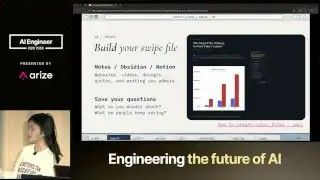
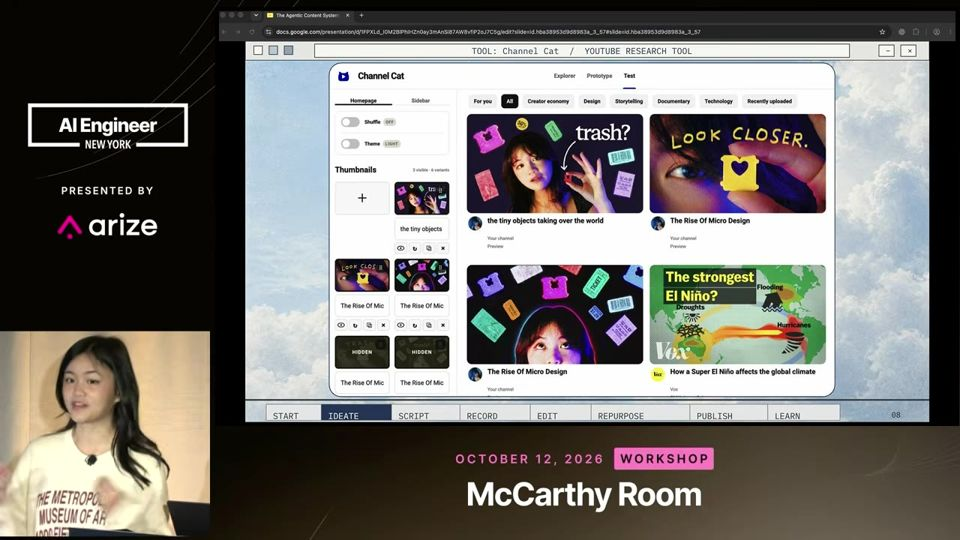
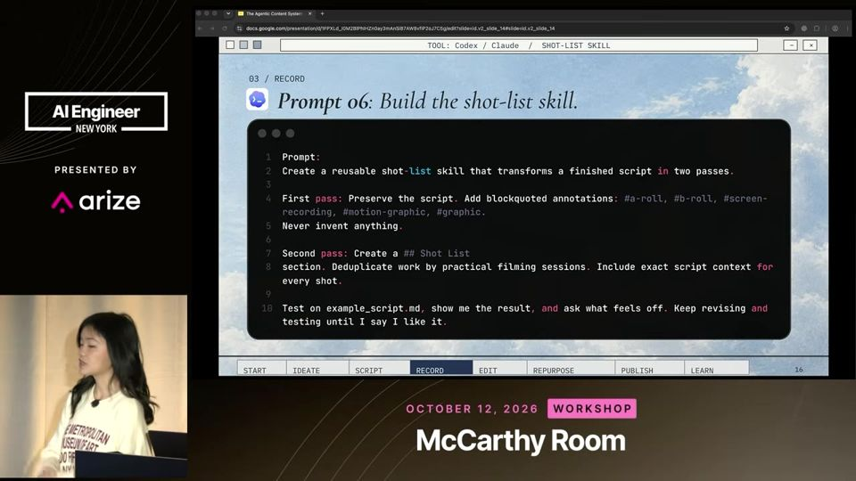
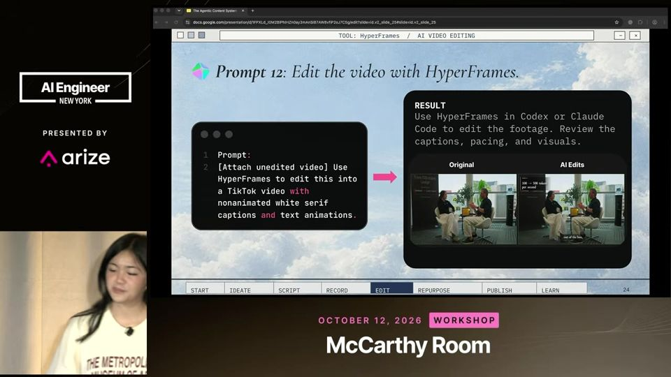
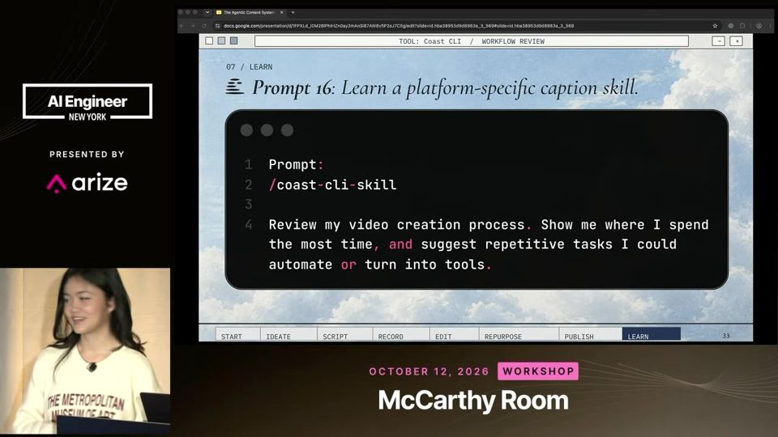

The AI Content System Behind 200M Views
Agentes cuidam do trabalho chato nas seis etapas do conteúdo. Ideia, voz e decisão final continuam com você.
Em 3 frases
Sarah Chieng (Cerebras) e Cova Lee (OpenAI) mostram um fluxo de seis etapas para criar vídeo com agentes: ideação, roteiro, gravação, edição, reaproveitamento e publicação.
Cada etapa usa prompts e skills (instruções reutilizáveis) rodando no ChatGPT/Codex, com ferramentas como swipe file, shot list, design system, computer use e agendamento de posts.
As duas insistem que a IA deve cortar o trabalho tedioso e que o criador mantém a voz e o gosto, senão o resultado vira slop (conteúdo genérico de IA).
Antes de ler
Swipe file como gosto que o agente consegue ler
Um swipe file reúne links, vídeos e imagens de que você gosta. Pode ser um site, uma página do Notion ou do Obsidian. O agente lê essas referências e entende seu estilo melhor do que uma descrição em texto. Sarah cola no Notion todo link de que gosta no Twitter.

Ferramentas sob medida para pesquisar o que funciona
Cova pediu a um agente que criasse uma ferramenta de pesquisa de YouTube. Ela puxa milhares de vídeos de criadores favoritos, remixa miniaturas e simula a página inicial para testar se o título e a miniatura se destacam antes de produzir o vídeo.

Roteiro falado, três versões e shot list
Sarah fala o conceito em voz alta, como se ensinasse alguém, para fugir do tom de marketing. Depois pede três roteiros e um ranking por critérios. Em seguida o agente anota o roteiro com A-roll (fala em câmera) e B-roll (imagens de apoio) e gera um checklist de filmagem.

Mais 2 ideias deste talk
Edição por API e por computer use
Com a documentação de uma API de edição como a HyperFrames, o agente monta, renderiza e revisa o vídeo a partir de material bruto e de guias de marca do Figma. Para controle fino, o agente opera Premiere ou CapCut por computer use, inclusive inserindo efeitos sonoros de um pad que Cova criou.

Skill semanal que audita o seu processo
Uma skill pede ao agente que revise seu processo de criação, mostre onde o tempo vai e sugira automações. Cova descobriu que mantinha dois lugares para a triagem matinal e que uma checagem no Premiere desperdiçava tempo. Rodar toda semana melhora o sistema.

Palestrantes de Cerebras e OpenAI usam produtos das próprias empresas (modelo rodando em Cerebras, ChatGPT, Codex) e oferecem créditos no fim, então há pitch. Os 200M de views do título não aparecem com fonte no talk. Não há medição do ganho de tempo nem comparação com fluxo sem IA. Os exemplos são de duas criadoras com audiência grande e contas já estabelecidas, o que dificulta generalizar.
O que fazer com isso
- Monte um swipe file simples (uma página de notas com links de conteúdo que você admira) e peça ao seu assistente de IA para ler antes de escrever qualquer texto.
- Fale o conceito em voz alta e peça que a IA entreviste você antes de gerar o roteiro. Peça três versões e escolha a sua.
- Cole uma lista de sinais de escrita de IA no prompt de legendas e textos e proíba esses padrões.
- Crie uma rotina semanal em que a IA revisa seu processo e aponta tarefas repetitivas para automatizar.